PROYECTOS DE VÍDEO
Estos son algunos de mis últimos proyectos
Podcast 'Dejando Huella'
Director de Fotografía - Ep.1 & Ep.2 - 2026
Producción audiovisual completa para formato podcast, cuidando la iluminación y composición para un acabado profesional en nuevos medios.
Ver ProyectoFotogramas y Detrás de Cámara
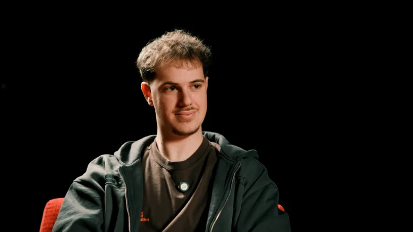
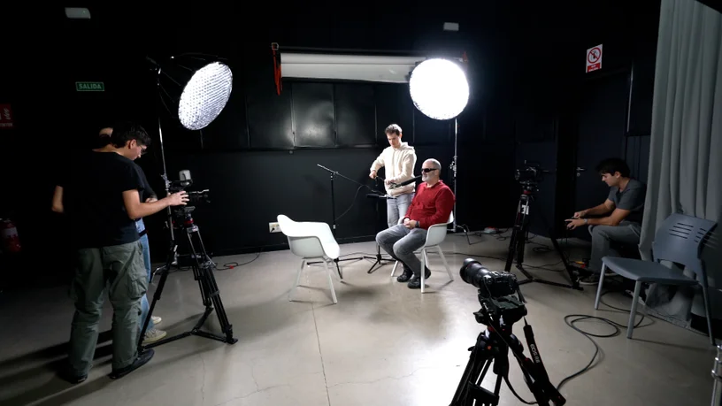
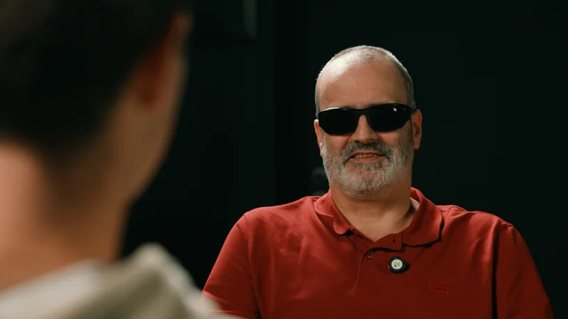
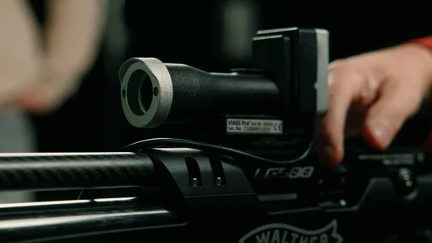
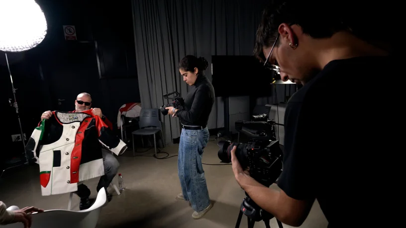
Noche de Luz
Director de Fotografía - Cortometraje UFV - 2025
Proyecto audiovisual elaborado a través de la UFV para felicitar la Navidad.
Ver ProyectoFotogramas
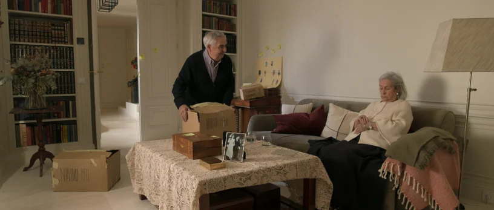
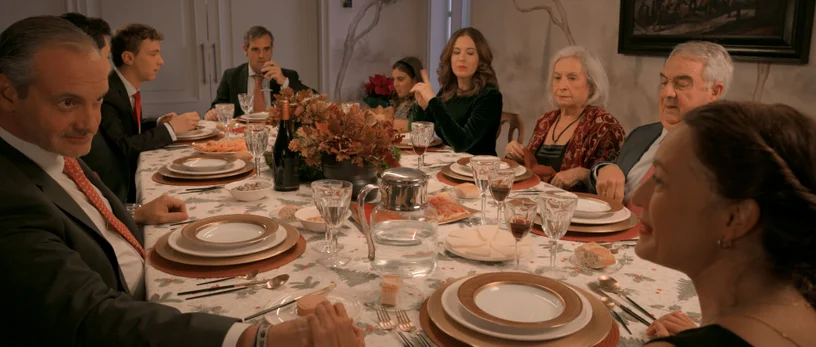
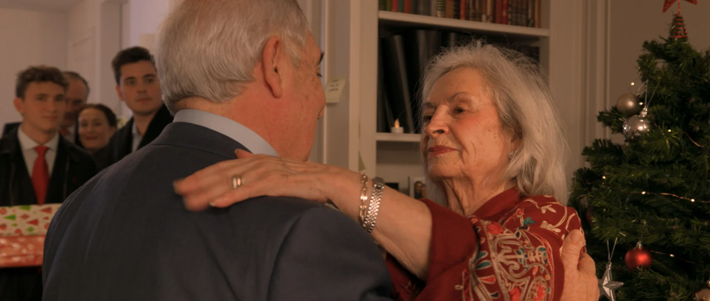
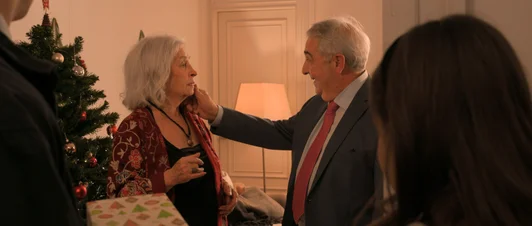
Detrás de Cámara
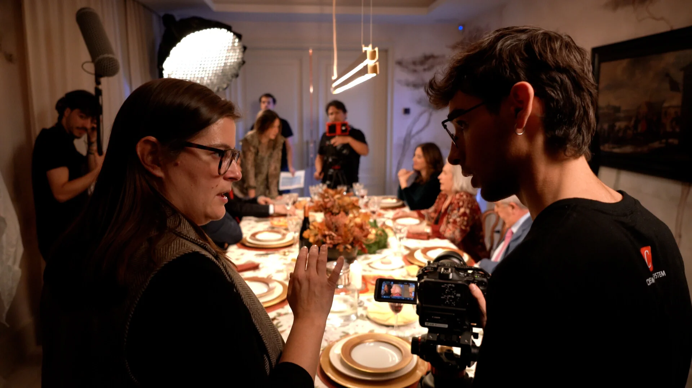
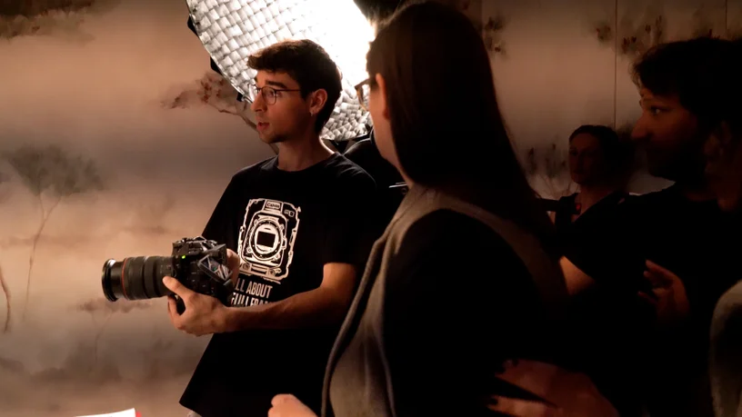
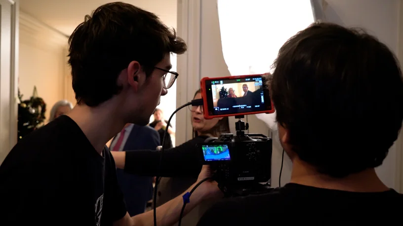
Mirada 21 Media Lab
Producción de contenido RRSS - UFV - 2025/2026
Grabación y edición de píldoras audiovisuales dinámicas publicadas en las redes sociales de la Facultad de Comunicación de la Universidad Francisco de Vitoria.
Ver ProyectosConcurso 'Invisible'
Realizador y Editor - Colegio Ntra. Sra. del Buen Consejo - 2025
Pieza audiovisual creada para el Colegio Ntra. Sra. del Buen Consejo. Presentada en el concurso 'Invisible' del grupo musical Siloé.
Ver ProyectoFotogramas y Detrás de Cámara
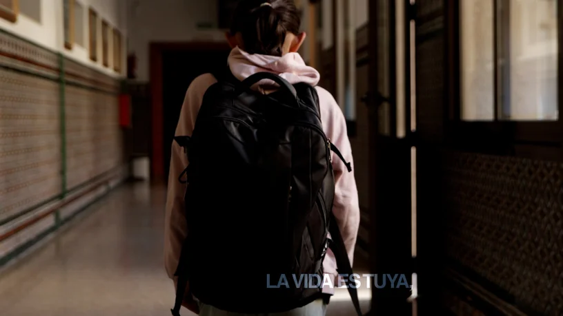
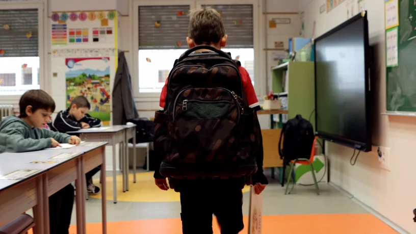
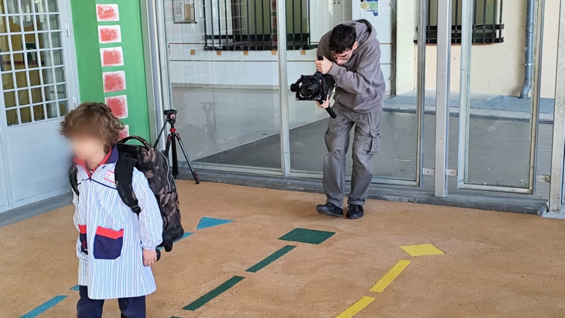
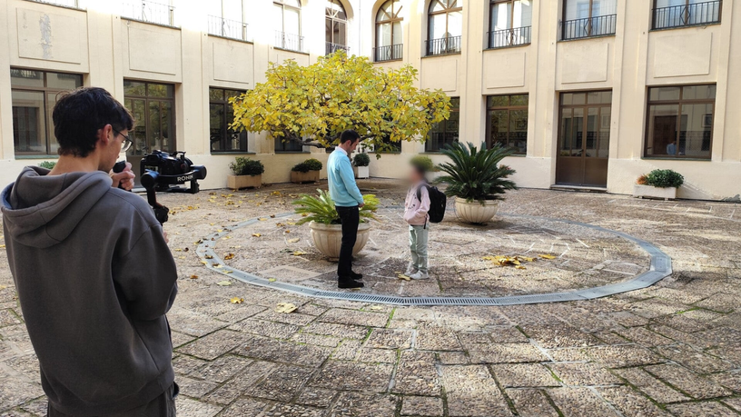
Puertas abiertas
Realizador y Editor - Colegio San Agustín de los Negrales - 2024
Vídeo promocional e institucional enfocado en transmitir los valores y las instalaciones del colegio para su jornada de puertas abiertas.
Ver ProyectoPROYECTOS VISUALES
Algunos fotogramas de obras inéditas
Conversaciones con el Maestro
Director de Fotografía y Editor - Documental universitario - 2025
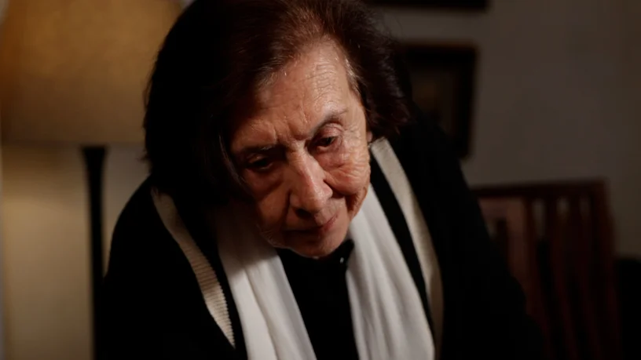
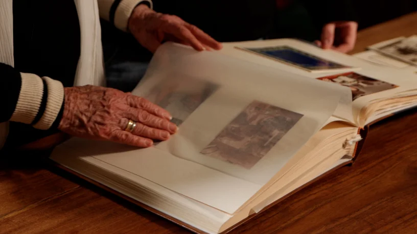
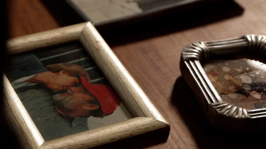
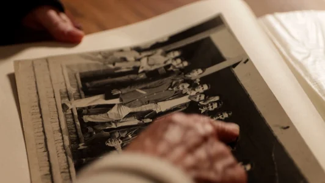
El Sonido de la Calle
Director de Fotografía - Cortometraje universitario - 2026
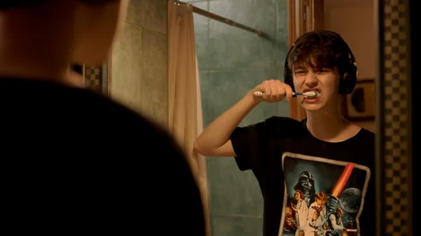
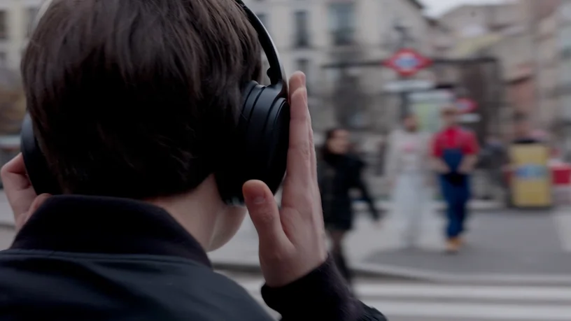
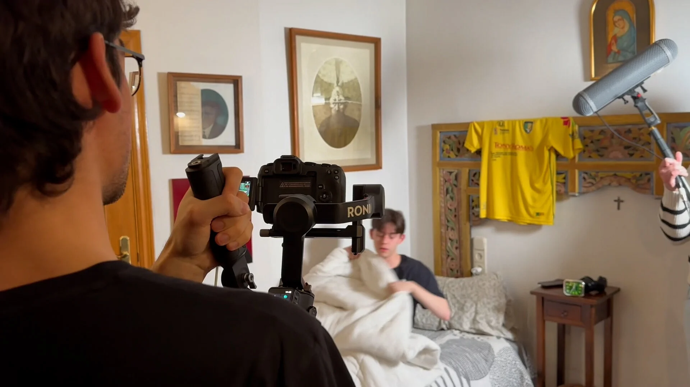
Si quieres más información sobre mis trabajos ¡Ponte en contacto conmigo!
Contactar